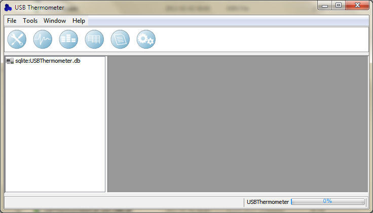
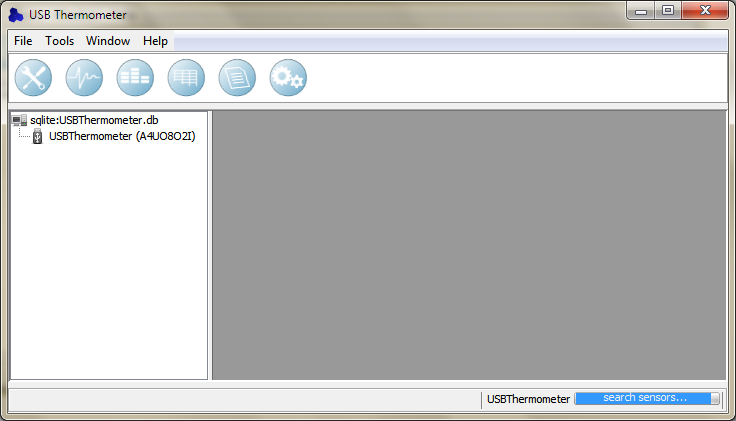
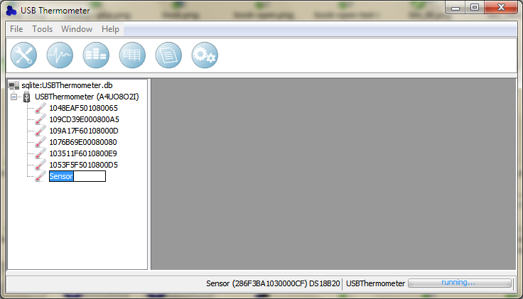
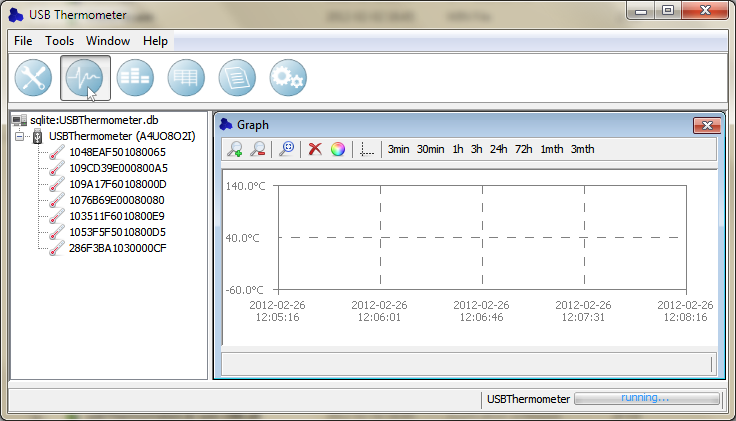
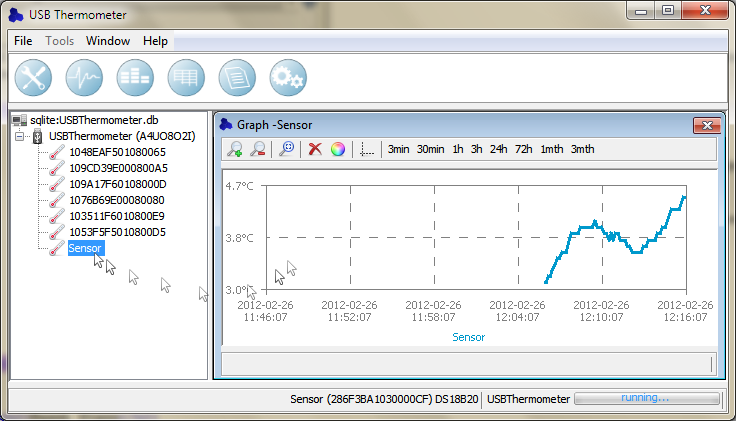

Pierwszy start
Podczas pierwszego uruchomienia aplikacji okno programu będzie miało następujący wygląd.
Nie ma żadnych okien prezentacji danych. Do komputera nie został jeszcze podłączony sprzęt.

Następnie, po podłączeniu urządzenia USB Thermometer, pod ikoną prezentującą bazę danych
pojawi się nowe urządzenie. Aplikacja rozpocznie wyszukiwanie czujników podłączonych do
urządzenia.

Po zakończeniu wyszukiwania czujników zostaną one wyświetlone poniżej ikony reprezentującej
urządzenie. W tej chwili aplikacja pracuje, temperatury są już rejestrowane do bazy danych.
Zmiana nazwy czujnika
Możliwa jest teraz zmiana nazwy znalezionych czujników. W tym celu należy zaznaczyć interesujący
nas czujnik i nacisnąć dwukrotnie lewy przycisk myszy lub klawisz F2. Wprowadzić nową nazwę
i zatwierdzić.

Obserwacja danych
Aby wyświetlić wykres temperatury w czasie na pasku narzędzi klikamy ikonę Wykresu.
Zostaje otwarte nowe okno.

W celu wyświetlenia wykresu temperatury wybranego czujnika należy go zaznaczyć i przeciągnąć
nad nowo otwarte okno. Czujnik zostanie dodany do wykresu i wyświetlony zostanie przebieg
temperatury w czasie.

W przypadku pozostałych okien prezentacji danych czujniki dodaje się w taki sam sposób jak powyżej.
Za pomocą metody przeciągnij i upuść.
|